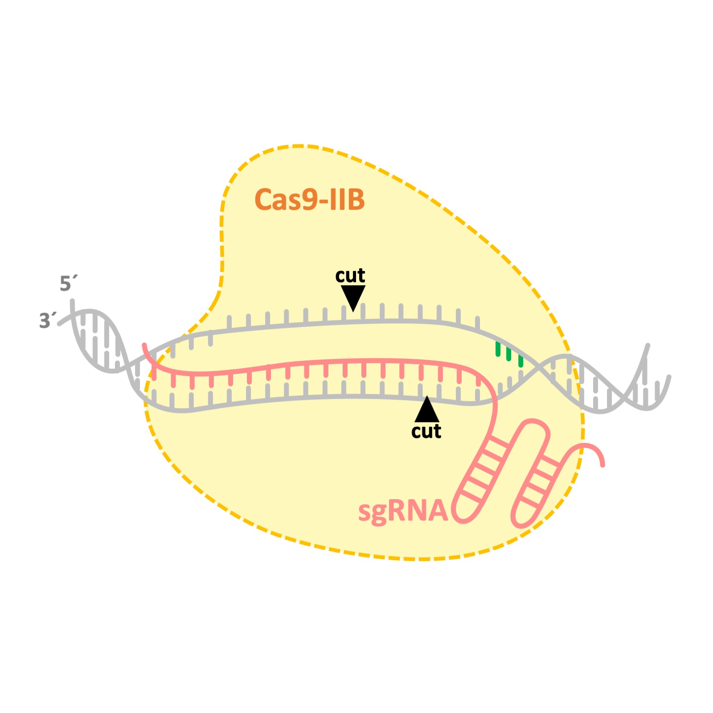
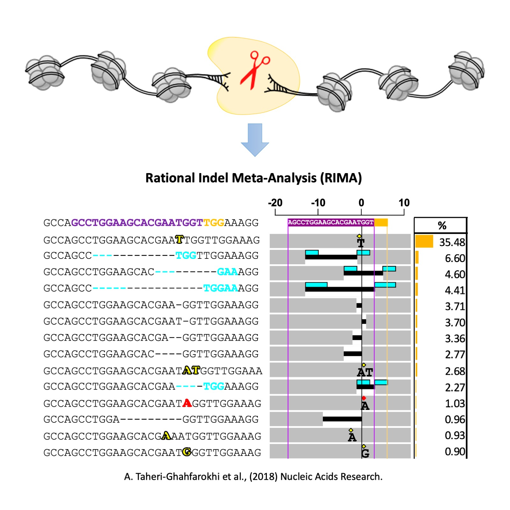
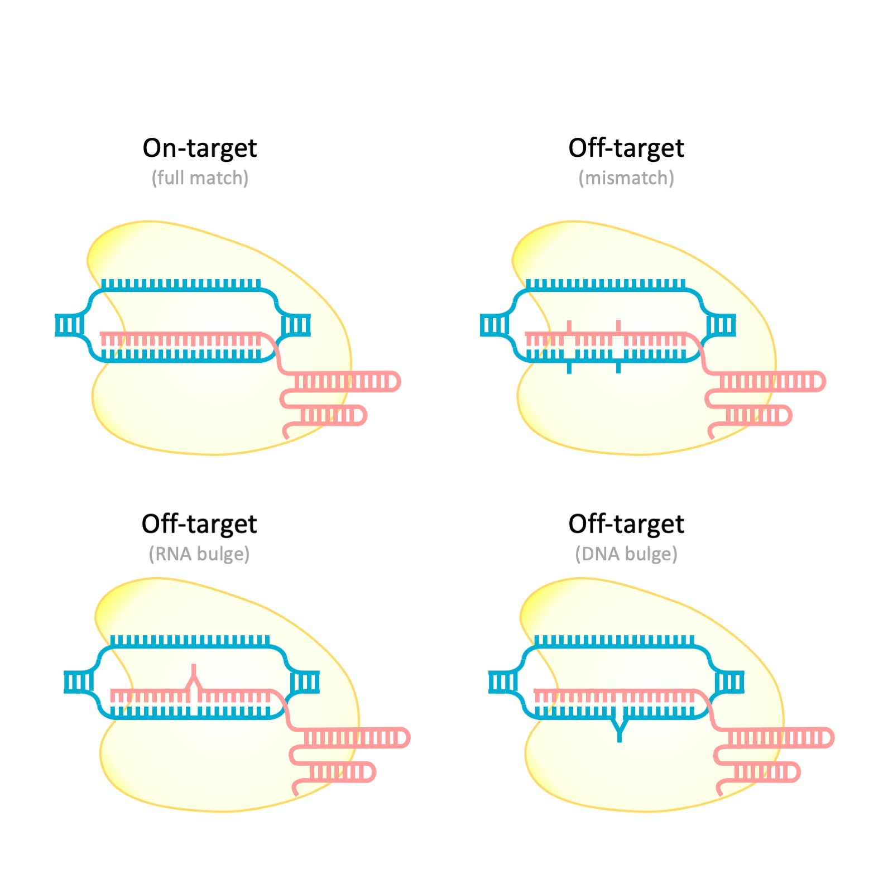

CRISPR-Cas9 was originally adapted from bacteria for precise genome editing applications in human cells. The discovery of the CRISPR-Cas9 systems came through the pioneering work by Prof. Jennifer Doudna and Prof. Emmanula Charpentier aiming at understanding how bacteria acquire immunity against phages. In prokaryotes, the CRISPR-Cas systems are multi-components, i.e., one or mutiple Cas proteins (e.g., Cas1, Cas2, etc.), and one or more short RNAs (e.g., crRNA and tracrRNA), which together form a RiboNucleoProtein (RNP) complex. In the majority of bacteria, several Cas proteins work together to find and destroy the genetic materials from invading viruses. However, in a small percentage of bacteria, all functions to find and destroy the invading genomes is provided via a single protein, called Cas9.
To date, the mostly used CRISPR-Cas9 systems in human cells is the Cas9 discovered in Streptococcus pyogenes (spCas9). Bringing new CRISPR-Cas9 systems out from prokaryotic cells and adapting them for applications in human cells is challenging for several reasons. First of all, correct identification of RNA species (e.g., crRNA and tracrRNA) from raw and un-annotated sequencing data requires multi-desciplinary knowledge in bioinformatics and molecular biology. Second, there are fundamental differences in the central dogma of life between prokaryotic and eukaryotic cells, which adds another layer of complexity on how the activity of new Cas9 variants could to be tested in human cells.
During my postdoctoral research at AstraZeneca, I contributed to the discovery and adaptation of several Cas9 proteins from IIB class. We discovered that Cas9s from IIB class cut the DNA at different positions compared to the frequently used spCas9. While spCas9 generate either blind or single nucleotide overhang DNA cleavages, Cas9s from IIB class cut the DNA in a staggered manner and leave 3 to 5 nucleotides overhang. This novel nuclease activity may enable designing more efficient knock-in startegies. Patent number: WO2019099943A1 .

Genome editing consists of two sequential events: cut and repair. The cut is often introduced via applying programmable nucleases like Cas9 in a targetd manner. The repair, however, mainly relies on the recruitment of cell's own DNA repair machinery. Perfect repairs at the broken site reconstitute the sequence of the targeted site, which could be cleaved again and again by the programmed nuclease. Repairs can also lead to intoduction of new mutations (i.e., insertion and deletions, so-called as indels) at the cleavage site.
Indels were assumed to be random repair events, until recently that several publications reavealed their non randomness nature. Indeed, indel profiles at different genomic loci are distinct from each other, however, the indel profiles are reproducible at a given target site in different cell lines and between different experimental replicates. So, what causes the formation of reproducible mutations at a given target site in different cells?
Through my research on charachterizing the Cas9 nucleases in human cells, I developed a bioinformatics tool, called Rational Indel Meta-Analysis (RIMA), to analyze, categorize and visualize the mutation patterns at Cas9 cleavage sites. RIMA aid the understanding of how DNA repair pathways interact with the Cas9 cleavge activity and the sequence context of a targeted site, which further explains the reasons behind the non-randomness nature of Cas9-induced mutations. RIMA could also help to profile the contribution of different DNA repair pathways in the repair of DNA double strand breaks in human cells. RIMA has enabled several applications in genome editing and cancer research. I used RIMA to differentiate the nuclease activity of spCas9 and new Cas9 proteins from IIB class. Different Cas9s possess different nuclease activity, which results in the formation of distinct indel profiles at their targeted sites. In cancer, cells often loss the activity of one of the DNA repair pathways, which in turn results in their addiction to the remaining DNA repair pathways to cope with their fast-paced replication. Hence, targeting the over-activated DNA repair pathway is an attracting approach in cancer drug discovery programs. Using RIMA, we could measure the overall DNA repair capacity of the cells, validate the role of the key proteins involved in DNA repair pathways, and screen for compounds that inhibit the over-activated repair pathway. Please see the publication in Nucleic Acids Research .

I am currently working on the manuscript, please feel free to reach out to me if you are interested in collaboration.